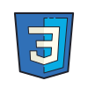
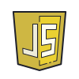
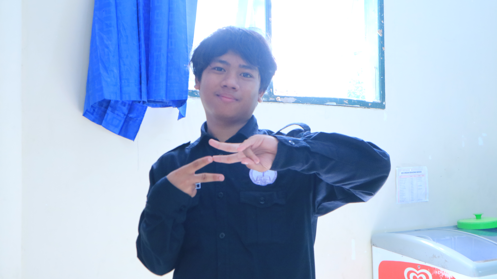
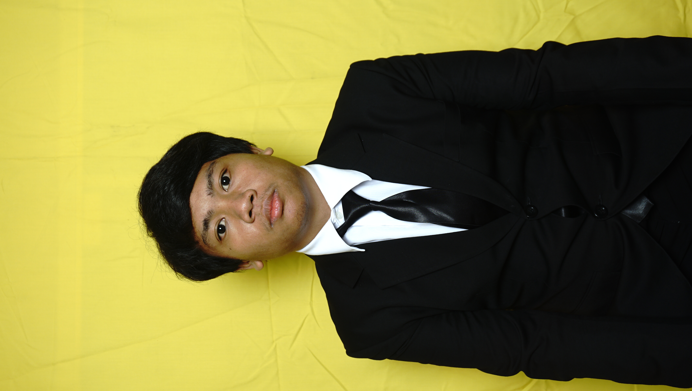
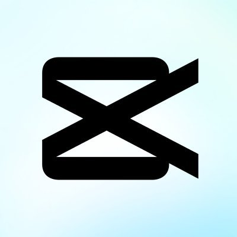

Programming
Membangun dan mengembangkan antarmuka di dalam kode sebuah pemograman dengan bahasa yang saya kuasai.

CSS
JavaScript MySQL PHPLulusan freshgraduate dari Politeknik Negeri Samarinda dengan gelar Sarjana Teknik (S.Tr.T) di jurusan Teknologi Infromasi, program studi D4 - Teknologi Rekayasa Komputer. Saya memiliki minat yang memadukan kemampuan pengembangan web, pemrograman, Internet of Things, desain visual, dan multimedia untuk menciptakan solusi digital yang fungsional serta bermakna.


TENTANG SAYA
Lulusan Sarjana Terapan Teknologi Rekayasa Komputer Politeknik Negeri Samarinda dengan IPK 3,90 yang memiliki kompetensi pada bidang jaringan komputer, Internet of Things (IoT), pengembangan aplikasi berbasis web, administrasi sistem, serta dukungan teknis TI. Memiliki pengalaman profesional melalui program magang di PT Pupuk Kalimantan Timur dan PT Multindo Technology Utama dalam pengelolaan infrastruktur jaringan, pengembangan sistem monitoring IoT berbasis web, troubleshooting perangkat jaringan, hingga pengembangan aplikasi internal perusahaan.
Terbiasa bekerja secara analitis, kolaboratif, dan berorientasi pada penyelesaian masalah untuk mendukung efektivitas operasional teknologi informasi.
Keahlian (Skills)
Kombinasi antara Programming, Desain Grafis, Multimedia, Administrasi
Membangun dan mengembangkan antarmuka di dalam kode sebuah pemograman dengan bahasa yang saya kuasai.

CSS
JavaScript MySQL PHPMembangun komunikasi antara desaigner dan pembaca lewat karya digital lewat desain grafis. Berikut aplikasi yang saya kuasai di dunia desain grafis.
Tak hanya lewat grafis dan gambar, video yang kita buat dan ciptakan akan menghasilkan suatu karya. Dari suatu aplikasi yang kita sentuh dengan editan yang luar biasa. Berikut adalah aplikasi multimedia untuk mendukung dalam pembuatan video.

Capcut Adobe PremiereTak hanya lewat program dan multimedia serta desain, saya memiliki minat di dunia perkantoran terutama administrasi. Kemampuan ini seperti melakukan pekerjaan pemograman saya dengan menginput data, arsip data, dan mengumpulkan data. Berikut aplikasi yang saya kuasai dalam meninjau data perusahaan lewat administrasi.
Jejak Arsip Herson
Ini adalah pengalaman kerja, sertifikasi, project , dan Organisasi saya yang saya lakukan selama masa sekolah. Dengan mengklik salah satu menu dibawah maka akan menampilkan isi dari context berbeda mengenai arsip saya selama di dunia pendidikan.
PROJECT / 01
Sistem irigasi yang menggunakan sensor soil moisture untuk mengukur kelembapan tanah dan mendukung dalam proses penyiraman tanaman secara otomatis hanya menggunakan Internet of Things pada alat tersebut.
PROJECT / 02
Website perpustakaan untuk pengelolaan data buku dan peminjaman.
PROJECT / 03
Website perpustakaan untuk penyewaan dan peminjaman barang inventaris sekre UK KBMK Polnes.
Connect with Me
Jika berminat untuk bekerja sama atau bersedia merekrut saya dalam bergabung di sebuah perusahaan ,harap hubungi nomor via Whastapp atau bisa mengecek media sosial yang saya cantumkan atau bisa langsung klik icon untuk langsung terhubung dengan saya.